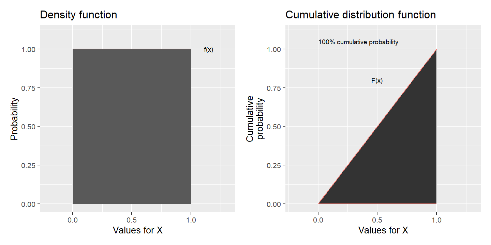
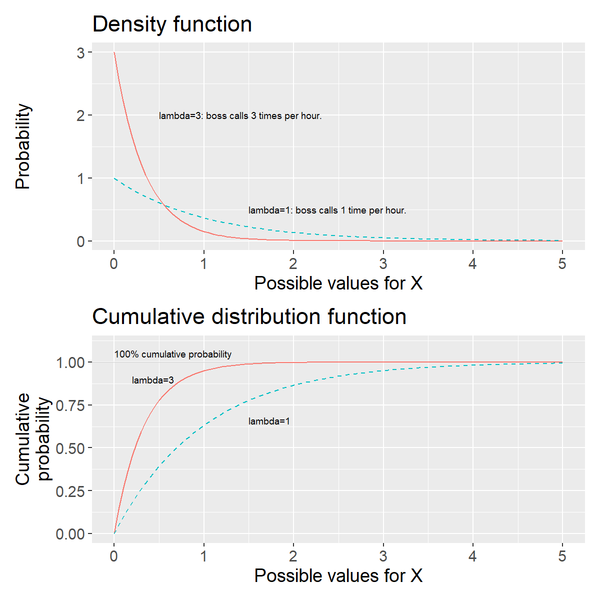
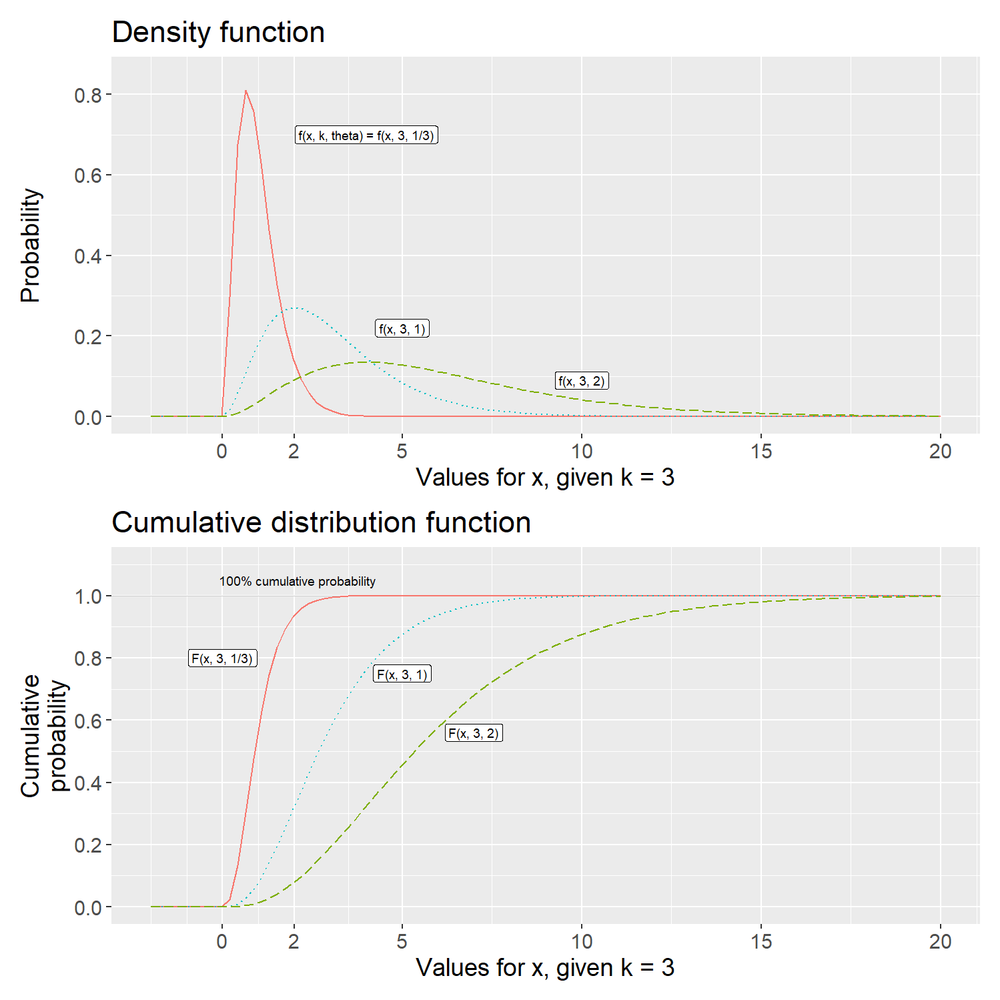
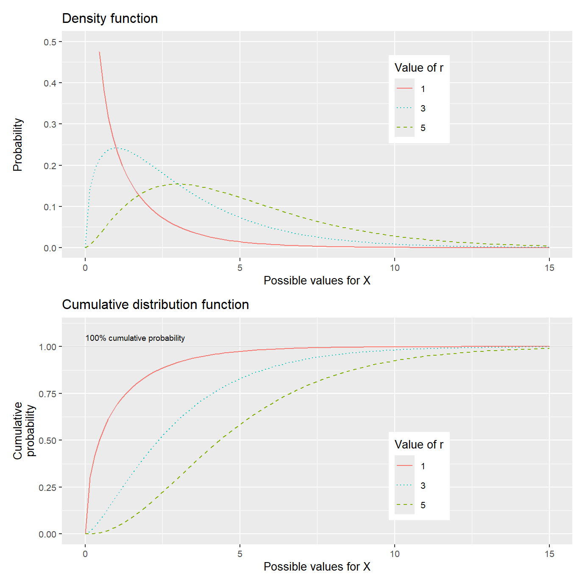
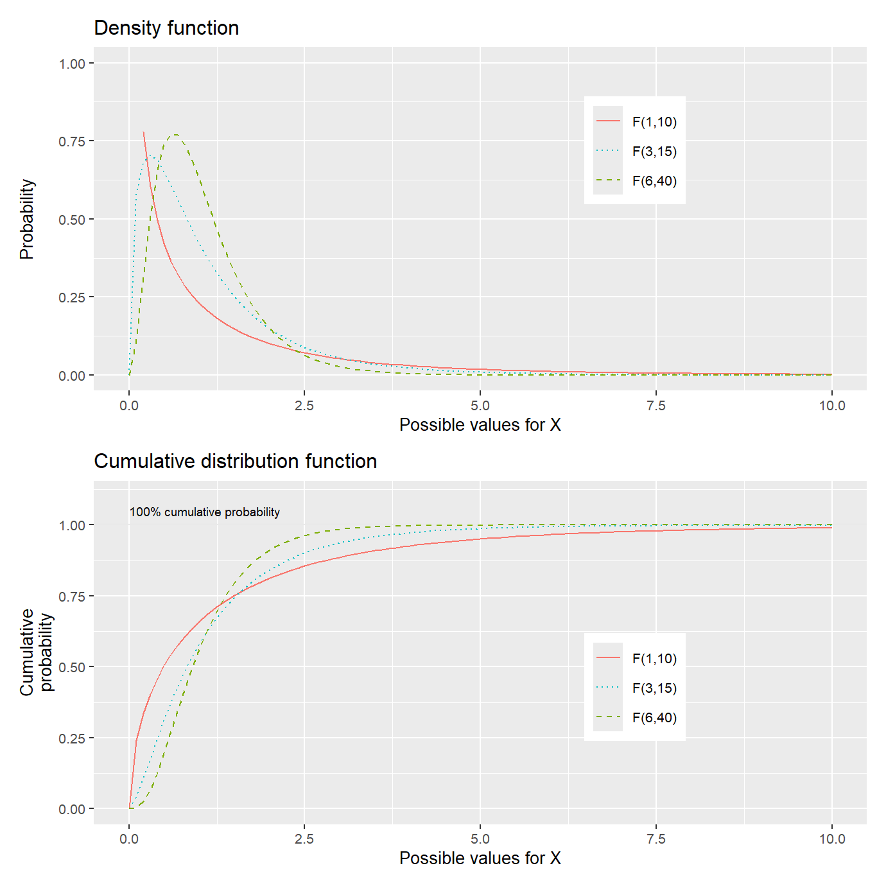

Chapter 22 Fundamental Probability Theory 2: Continuous Distributions
In this chapter we will introduce probability distributions that are continuous and can assume an infinite number of different values. The chapter covers some examples of commonly occurring probability distributions.
22.1 Uniform Continuous Probability Distributions
A continuous random variable can assume an infinite number of different values, for example all decimals between two integers. Let us assume that \(X\) follows a uniform continuous probability distribution and has the same probability of assuming all values between 0 and 1. Since the number of possible values is infinite, the probability for a specific value is zero. However, the probability is greater than 0 for an interval of values. The probability for \(0<X\leq0.5\) is 50% and the probability for \(0.5<X\leq1\) is also 50%.
For a discrete variable we used a probability function to describe the probability for different outcomes. The corresponding function that describes the probability for possible outcomes in a continuous variable is called a density function.
A continuous probability distribution with constant probability over the possible outcomes is called a uniform probability distribution. The density function for a random continuous variable \(X\) can then be written as:
\[\begin{equation} f\left(x;a,b\right)=P\left(X=x\right)=\begin{cases} \frac{1}{b-a} & \forall a\leq x\leq b\\ 0 & \text{otherwise} \end{cases} \tag{22.1} \end{equation}\]
where \(a\) and \(b\) delimit the interval for the possible outcomes for \(X\). If \(X\) can assume all values between 0 and 1 we have that \(a=0\) and \(b=1\). To calculate the cumulative probability for a continuous random variable we use a cumulative distribution function, which we call F. In chapter 13 we covered how we with integrals can sum values over continuous intervals. This we also use to derive the cumulative distribution function for a random continuous variable. We take the integral of the density function f in equation (22.1):
\[\int_{-\infty}^{b}f\left(x\right)dx = \int_{-\infty}^{a}0\,dx+\int_{a}^{b}\frac{1}{b-a}dx\]
We divide the integral into one part that sums \(f\left(x\right)\) with respect to \(x\) for values from negative infinity, \(-\infty\), to \(a\). From equation (22.1) we know that \(f\left(x\right)\) is 0 for all these values. The integral of 0 therefore also becomes 0. If we take the integral from the value \(X=a\) to \(X=b\) we get the probability that \(X\) will assume any of all possible outcomes. The cumulative probability is then 1, that is 100%:
\[F\left(x\right) = P\left(X\leq x\right)=\left.\frac{x}{b-a}\right|_{a}^{b}=\frac{b-a}{b-a}=1\]
More generally we describe \(F\) as:
\[\begin{equation} F\left(x;a,b\right)=\begin{cases} 0 & x<a\\ \frac{x-a}{b-a} & a\leq x<b\\ 1 & b\geq x \end{cases} \tag{22.2} \end{equation}\]
For the values \(x<a\), \(F\left(x\right)=0\). For values \(x\geq b\), \(F\left(x\right)=1\), since we cannot have more than 100% probability. Suppose we want to calculate the probability that \(X\) takes a value between \(a\) and \(c\), where \(c\) is a value between \(a\) and \(b\):
\[\begin{equation} \begin{aligned} F\left(x\right) & =\left.\frac{x}{b-a}\right|_{a}^{c}=\frac{c}{b-a}-\frac{a}{b-a}=\frac{c-a}{b-a} \end{aligned} \tag{22.3} \end{equation}\]
We also calculate the probability that \(X\) assumes a value within an interval, for example between 0.3 and 0.5:
\[P\left(0.3\leq x\leq0.5\right) = \left.\frac{x}{b-a}\right|_{0.3}^{0.5}=\left.\frac{x}{1-0}\right|_{0.3}^{0.5}=\frac{0.5-0.3}{1}=0.2\]

Figure 22.1: Uniform continuous probability: density function (left) and cumulative distribution function (right).
Figure 22.1 illustrates the density function f and cumulative distribution function F for the random continuous variable \(X\), which follows a uniform probability distribution. In the left graph the density function is illustrated in the way it is described in equation (22.1). If we have a continuous random variable, the line that the density function draws in a graph is called a probability curve. The probability on the vertical y-axis is equal to \(\frac{1}{b-a}\) for all values between 0 and 1. The density function for a uniform probability distribution is characterized by always looking like a rectangle in a graph. In the right graph the cumulative distribution function is illustrated, equation (22.2). The cumulative probability increases from 0 to 1 over the interval 0 to 1. That variable \(X\) follows a uniform continuous probability distribution can in a similar way as for a discrete variable be written:
\[X\sim U\left(a,b\right)\]
where \(a\) and \(b\) are the limits for the interval of possible outcomes.
22.2 Expected Value and Variance for Continuous Random Variables
In section 21.4 we introduced expected value for discrete random variables as the sum of outcomes multiplied by their probability, \(E\left(X\right)=\sum xf\left(x\right)\). The expected value for a continuous random variable is in a similar way the sum of outcomes multiplied by the probabilities. Since we now will sum a continuous interval we use integrals:
\[\begin{equation} E\left(X\right)=\int_{-\infty}^{\infty}xf\left(x\right)dx \tag{22.4} \end{equation}\]
which should be read as that we sum from negative infinity to positive infinity all possible outcomes \(x\) multiplied by the probability per value, which is given by \(f\left(x\right)\). The expected value for a random variable \(X\) that follows a uniform continuous probability distribution, \(X\sim U\left(a,b\right)\), can be written:
\[E\left(X\right)=\frac{1}{2}\left(a+b\right)\]
where \(a\) and \(b\) delimit possible values for \(X\). If we let \(a=0\) and \(b=1\), \(X\) has the expected value:
\[E\left(X\right) = \frac{1}{2}\left(0+1\right)=\frac{1}{2}\]
Variance for a continuous random variable \(X\) can be described as the same expected value as variance for discrete random variables:
\[var\left(X\right)=E\left(\left(X-\mu_{X}\right)^{2}\right)=\sigma_{X}^{2}\]
If we write out the definition of the expected value from equation (22.4):
\[E\left(\left(X-\mu_{X}\right)^{2}\right)=\int_{-\infty}^{\infty}\left(X-\mu_{X}\right)^{2}f\left(x\right)dx\]
The standard deviation is, as for discrete variables, the square root of the variance: \(\sigma_{X}=\sqrt{var\left(X\right)}=\sqrt{\sigma_{X}^{2}}\). Conditional expected value for continuous random variables \(X\) and \(Y\) is written:
\[E\left(Y|X\right)=\int_{-\infty}^{\infty}\int_{-\infty}^{\infty}xyf\left(x,y\right)dx\,dy\]
where \(f\left(x,y\right)\) is the joint probability distribution. The law of total expectation also applies to continuous distributions, \(E\left(E\left(X|Y\right)\right)=E\left(X\right)\), as well as the rule that \(E\left(XY|X\right)=XE\left(Y|X\right)\).
22.3 Exponential Distributions
In section 21.9 we introduced the Poisson distribution. Now we will instead of number of outcomes within a time period calculate the probability for a time period until the next outcome. Say for example that your boss usually calls you three times per hour to check how it’s going with that report you were supposed to write. This average value we call \(\lambda=3\). The average waiting time for a call is in that case \(\theta=\frac{1}{\lambda}=\frac{1}{3}\) hour. The time until the next call is a continuous random variable \(X\) that follows what is called the exponential distribution. The probability for the waiting time \(x\) can then be described with the following density function:
\[\begin{equation} f\left(x;\lambda\right)=\begin{cases} \lambda e^{-\lambda x} & x\geq0\\ 0 & x<0 \end{cases} \tag{22.5} \end{equation}\]
where \(\lambda\) is greater than 0 and e is Euler’s number. The exponential distribution can among other things be used to describe the probability for the waiting time until the first event in a Poisson process. Since we have a continuous probability distribution, the probability for each individual outcome is equal to 0. The cumulative distribution function \(F\) of the exponential distribution can be written:
\[\begin{equation} F\left(x\right)=P\left(X\leq x\right)=1-e^{-\lambda x} \tag{22.6} \end{equation}\]
Function \(F\) shows the probability that the waiting time for the next phone call is less than \(x\). If we instead want to calculate the probability that the waiting time is longer than \(x\), that is \(X>x\), we take:
\[P\left(X>x\right)=1-P\left(X\leq x\right)\]
Since \(P\left(X\leq x\right)=F\left(x\right)\) we replace the term \(P\left(X\leq x\right)\) with the definition of the cumulative probability distribution:
\[\begin{equation} \begin{aligned} P\left(X>x\right) & =1-F\left(x\right)=1-\left(1-e^{-\lambda x}\right)=e^{-\lambda x} \end{aligned} \tag{22.7} \end{equation}\]
With this definition we estimate the probability that the waiting time for the next call from the boss is longer than time \(x\). If the boss usually calls three times per hour then \(\lambda=3\) and \(\theta=1/\lambda=1/3\). Now we will estimate the probability that the waiting time becomes more than 1 hour, \(X>1\). From equation (22.7) we have that:
\[P\left(X>1\right) = e^{-3\cdot1}\approx0.0496\]

Figure 22.2: The exponential distribution: density function, \(f(x)\), and cumulative distribution function, \(F(x)\).
The probability that the boss does not call the first hour is approximately 5%. Figure 22.2 illustrates the density function and cumulative distribution function for the exponential distribution with two examples for \(\lambda=1\) and \(\lambda=3\), where \(\lambda\) is the number of events on average over a time interval. The value for \(\lambda\) is what determines the shape of the probability distribution.
The upper graph shows the density function, equation (22.5). Since \(X\) is defined for all positive values, the probability never reaches 0 by definition, but only infinitely close. In the lower graph the cumulative distribution function is illustrated. The cumulative distribution function never reaches the value 1, but instead comes infinitely close to 1.
To read the probability of approximately 5% when we calculated \(P\left(X>1\right)=1-F\left(x\right)=e^{-3}\) we look in the lower graph and the solid black line, for which \(\lambda=3\). When \(X=1\) on the x-axis this line is near \(y=1\), that is 100% probability. For \(X=1\) this line is at \(y=F\left(X=1\right)\approx0.95\). This means that \(P\left(X>1\right)=1-F\left(x\right)\approx0.05\). If a variable \(X\) follows the exponential distribution we write:
\[X\sim EXP\left(\lambda\right)\]
The expected value for a variable \(X\) that follows the exponential distribution:
\[E\left(X\right)=\frac{1}{\lambda}\]
\(E\left(X\right)\) = average waiting time. Variance for the exponential distribution:
\[var\left(X\right)=\frac{1}{\lambda^{2}}\]
For higher values for \(\lambda\), more events on average per time unit, we get a smaller expected value, shorter waiting time, and smaller variance. In figure 22.2 the line with higher value for \(\lambda\) has steeper slope closer to \(x=0\).
22.4 From Poisson to Gamma
Say now that we have a variable that follows a Poisson process and that we want to calculate the probability that event number \(k\) occurs within time interval \(x\), where \(k\) is any positive integer. For this we use the Gamma distribution, whose density function \(f\) can be written:
\[\begin{equation} \begin{aligned} f\left(x;k,\theta\right) & =P\left(X=x\right)=\frac{x^{k-1}e^{-x/\theta}}{\Gamma\left(k\right)\theta^{k}} \end{aligned} \tag{22.8} \end{equation}\]
where \(\theta=1/\lambda\) is the average waiting time for an event. \(\theta\) is the Greek letter lowercase theta and \(\lambda\) is as before the average number of events per time unit. The density function uses three input values: \(x\), the time interval we will calculate the probability for, \(k\), number of events that should have occurred within the course of \(x\), and \(\theta\), the average expected waiting time.
The expression \(\Gamma\left(k\right)\) in the denominator of equation (22.8) is what is called the gamma function, which is a generalization of factorial. There is no room here to go through the gamma function in detail. For our review it suffices to note that for all positive integers \(k=1,2,3,...\) the gamma function can be described as:
\[\begin{equation} \Gamma\left(k\right)=\left(k-1\right)! \tag{22.9} \end{equation}\]
where \(\Gamma\) is the Greek letter capital gamma. If \(k=3\): \(\Gamma\left(3\right)=\left(3-1\right)!=2\cdot1=2\). One way to write the gamma function is the following integral:
\[\Gamma\left(x\right)=\int_{0}^{\infty}y^{x-1}e^{-y}\,dx, \text{ where }y>0\]
which sums from 0 to positive infinity for all positive real numbers. The cumulative distribution function of the gamma distribution:
\[\begin{equation} \begin{aligned} F\left(x;k,\theta\right) & =P\left(X\leq x\right)=1-e^{-x/\theta}\sum_{n=0}^{k-1}\frac{\left(x/\theta\right)^{n}}{n!} \end{aligned} \tag{22.10} \end{equation}\]
where \(x\) is the waiting time, \(k\) is the number of the event we will estimate the probability for and \(\theta\) is the average waiting time for such an event. Let us use function \(F\) to estimate the probability that we have to wait for more than two hours before the boss (from the example in the previous section) has managed to call us three times, \(k=3\). The boss usually calls three times per hour, which is why \(\lambda=3\) and \(\theta=1/\lambda=1/3\) hour. The waiting time two hours we write \(x=2\) and we therefore have \(x/\theta=2/(1/3)=6\).
We will calculate the probability \(P\left(X>2\right)\) but the cumulative distribution function in equation (22.10) is defined so that \(F\left(x\right)=P\left(X<x\right)\). To calculate \(P\left(X>x\right)\) we write (compare equation (22.7)):
\[P\left(X>x\right) = 1-F\left(x\right)\]
We replace \(F\left(x\right)\) in the right side with the definition from equation (22.10):
\[P\left(X>x\right) = 1-\left(1-e^{-x/\theta}\sum_{n=0}^{k-1}\frac{\left(x/\theta\right)^{n}}{n!}\right)=e^{-x/\theta}\sum_{n=0}^{k-1}\frac{\left(x/\theta\right)^{n}}{n!}\]
Now we calculate the probability for \(X>2\):
\[\begin{equation} \begin{aligned} P\left(X>2\right) & =e^{-6}\sum_{n=0}^{3-1}\frac{6^{n}}{n!}=e^{-6}\cdot25\approx0.06197 \end{aligned} \tag{22.11} \end{equation}\]

Figure 22.3: The gamma distribution with \(k=3\): density function, \(f(x)\), and the cumulative distribution, \(F(x)\).
There is approximately 6.2% probability that we have to wait for more than 2 hours for the boss to call us for the third time. Figure 22.3 illustrates the gamma distribution’s density function and cumulative distribution function with three different examples. All lines describe the probability that the boss calls three times, \(k=3\), but based on different average waiting times, \(\theta=1/\lambda\), namely \(\frac{1}{3}\), 1 or 2. The number \(\frac{1}{3}\) corresponds to 20 min and that the boss calls three times per hour. The number 1 means one hour and that the boss calls once per hour. The number 2 corresponds to two hours and means that the boss calls every other hour.
The upper graph illustrates the density function, equation (22.8) and the lower graph illustrates three versions of the cumulative distribution function, equation (22.10). Note in the upper graph how larger values for \(\theta\) mean greater spread in the probability distribution.
In both graphs \(x=2\) is marked on the horizontal x-axis. The calculation in equation (22.11) can for example be compared with the lower graph and the solid line. At \(x=2\) the line is near \(y=1\), which means that most of the cumulative probability is covered by the values \(X<x\). If a random variable \(X\) follows the gamma distribution we write:
\[X\sim\Gamma\left(k,\theta\right)\]
where \(k\) is the number of the event for which we will estimate the probability and \(\theta\) is the average waiting time, which we described above. Sometimes the symbols \(\alpha=k\) and \(\beta=\theta=1/\lambda\) are used instead. The expected value for a variable \(X\) that follows the gamma distribution is:
\[E\left(X\right)=k\theta\]
If we have \(X\sim\Gamma\left(3,\frac{1}{3}\right)\), as the example above with the calling boss, we get the expected value \(E\left(X\right)=3\cdot\frac{1}{3}=1\). The average waiting time for 3 calls is one hour. The variance for the gamma distribution:
\[var\left(X\right)=k\theta^{2}\]
This means that higher values for \(\theta\), longer waiting time, result in greater expected value and variance. This is illustrated in figure 22.3 where the lines in the upper graph with higher values for \(\theta\) show probability distributions with higher mean values that are also more spread out along the \(x\)-axis.
22.5 Chi-squared Distributions
Say now that we have a variable \(X\) that follows a gamma distribution with \(\theta=2\) and \(k=r/2\) where \(r\) is any positive integer. The distribution we then get is called the chi-squared distribution and is central to a large amount of analytical work. The density function in equation (22.8) for \(X\) can then be written:
\[\begin{equation} \begin{aligned} f\left(x;k=r/2\right) & =\frac{x^{\frac{r}{2}-1}e^{-x/2}}{\Gamma\left(\frac{r}{2}\right)2^{r/2}},\quad 0<x<\infty \end{aligned} \tag{22.12} \end{equation}\]
where \(\Gamma\left(\frac{r}{2}\right)\) is the gamma function. Equation (22.12) describes the density function for the chi-squared distribution. The cumulative distribution function \(F\left(x;r\right)\) for the chi-squared distribution can be written:
\[\begin{equation} \begin{aligned} F\left(x;r\right) & =P\left(X\leq x\right)=\int_{0}^{x}\frac{y^{\frac{r}{2}-1}e^{-y/2}}{\Gamma\left(\frac{r}{2}\right)2^{r/2}}dy \end{aligned} \tag{22.13} \end{equation}\]

Figure 22.4: Chi-square distribution: density function, \(f(x)\), and cumulative distribution function, \(F(x)\).
Figure 22.4 describes the density function and cumulative distribution function for the chi-squared distribution. The upper graph describes the density function for three different values of \(r\). The lower graph describes the corresponding cumulative distribution functions with the three values for \(r\). If a variable \(X\) follows the chi-squared distribution we describe this as:
\[X\sim\chi^{2}\left(r\right)\]
Alternatively \(X\sim\chi_{r}^{2}\), where \(\chi\) is the Greek letter lowercase chi. Generally the expected value for the chi-squared distribution can be described as:
\[E\left(X\right)=r\]
The expected value for a chi-squared distribution is equal to \(r\). The variance for the chi-squared distribution is equal to \(2r\):
\[var\left(X\right)=2r\]
This is also illustrated in figure 22.4 in that the lines with higher values for r in the upper graph have higher mean values, further to the right in the graph. The greater variance is illustrated by the line with the lowest value for \(r\) also having a steep slope near the vertical y-axis. Since the chi-squared distribution is continuous we use the cumulative distribution function \(F\left(x\right)\) in equation (22.13) to calculate probabilities.
The chi-squared distribution is often used in statistical analysis. Here we give only a simple example. Table 22.1 describes a frequency distribution where the first row indicates the value and the second row indicates observed frequencies of each value.
| Value | 5 | 6 | 7 | 8 | 9 | 10 |
| Frequency | 12 | 14 | 15 | 13 | 12 | 11 |
Say now that we want to know the probability that these observations come from a discrete uniform probability distribution (introduced in section 21.7). We compare the observed frequencies against the value we could have “expected” at uniform probability. If all values \(\left\{ 5,6,7,8,9,10\right\}\) have the same probability, all values should have the same frequency:
\[\frac{\sum x_{i}}{n} = \frac{12+14+15+13+12+11}{6}=12.83\]
To calculate the probability we use the following statistic:
\[\begin{equation} \chi^{2}=\frac{\sum_{i}^{n}\left(x_{i}-\mu\right)^{2}}{\mu} \tag{22.14} \end{equation}\]
where in this case we have \(\mu=12.83\), the expected value we want to compare against. The statistic \(\chi^{2}\) follows the chi-squared distribution with \(r=n-1\) degrees of freedom, which in this case becomes \(r=n-1=6-1=5\).
Equation (22.14) calculates the cumulative probability, \(F\left(x\right)\), that our observations deviate from the value we “expect”, based on the hypothetical uniform probability distribution that we want to check if the observations come from. That is, the higher \(\chi^{2}\) we calculate, the lower probability that our observations come from the type of distribution we compare against. We sum the squared deviation from \(\mu\) for each frequency value. For observation \(i=1\) we get \(\left(x_{i}-\mu\right)^{2}=\left(12-12.83\right)^{2}=0.6889\). Our test statistic becomes:
\[\chi^{2} = \frac{\sum\left(x_{i}-\mu\right)^{2}}{\mu}\approx10.833\]
The chi-squared distribution is so common that we here compare our calculated \(\chi^{2}\) against pre-calculated results for \(F\left(x\right)\). Table 22.2 describes probabilities for calculated results from the chi-squared distribution’s cumulative probability function \(F\left(x\right)=P\left(X\leq x\right)\). The percentages in the column headers describe how large a proportion of the distribution is equal to or less than the values in this column. In the table we see that our calculated \(\chi^{2}\)-value \(10.833>9.236\), which is in the column for 90%. This indicates that with 90% probability our observations do not follow a uniform probability distribution.
| 50% | 75% | 90% | 95% | 99% | |
|---|---|---|---|---|---|
| r=1 | 0.455 | 1.323 | 2.706 | 3.841 | 6.635 |
| r=2 | 1.386 | 2.773 | 4.605 | 5.991 | 9.210 |
| r=3 | 2.366 | 4.108 | 6.251 | 7.815 | 11.345 |
| r=4 | 3.357 | 5.385 | 7.779 | 9.488 | 13.277 |
| r=5 | 4.351 | 6.626 | 9.236 | 11.070 | 15.086 |
| r=6 | 5.348 | 7.841 | 10.645 | 12.592 | 16.812 |
| r=7 | 6.346 | 9.037 | 12.017 | 14.067 | 18.475 |
| r=8 | 7.344 | 10.219 | 13.362 | 15.507 | 20.090 |
| r=9 | 8.343 | 11.389 | 14.684 | 16.919 | 21.666 |
| r=10 | 9.342 | 12.549 | 15.987 | 18.307 | 23.209 |
22.6 F-distributions
Here follows a brief introduction to the F-distribution, which is also commonly occurring in statistical analysis. If we have two independent random variables \(X\) and \(Y\) that both follow the chi-squared distribution with degrees of freedom \(r_{x}\) and \(r_{y}\), we calculate a new variable \(S\):
\[S=\frac{X/r_{x}}{Y/r_{y}}\]
Variable \(S\) follows what is called the F-distribution, which can be written:
\[S\sim F\left(r_{x},r_{y}\right)\]
where the F-distribution’s shape is dependent on the values in \(r_{x}\) and \(r_{y}\). We do not go through the distribution’s density function and cumulative distribution function here but are content to just call these \(f\left(x\right)\) and \(F\left(x\right)\). Figure 22.5 illustrates the density function \(f\left(x\right)\) in the upper graph, and the cumulative distribution function \(F\left(x\right)\) in the lower graph.

Figure 22.5: The F-distribution: density function, \(f(x)\), and cumulative distribution function, \(F(x)\).
Table 22.3 describes pre-calculated probabilities for the F-distribution based on its cumulative distribution function, \(F\left(x\right)\), where the F-distribution can be written as \(F\left(r_{x},r_{y}\right)=F\left(\text{df 1},\text{df 2}\right)\). The table uses the abbreviation “df” for degrees of freedom. Columns describe different values depending on parameter \(\text{df}_{1}\) (i.e. \(r_{x}\)). The rows are divided for different values on the second parameter \(\text{df}_{2}\) (i.e. \(r_{y}\)). In column 2 with the heading \(P\left(X\leq x\right)\) the proportion of the distribution that is equal to or less than 0.95 (95%) and 0.99 (99%) of the distribution is described.
| df 2 | P(X≤x) | df1=1 | df1=2 | df1=3 | df1=5 | df1=10 |
|---|---|---|---|---|---|---|
| 5 | 0.95 | 6.61 | 5.79 | 5.41 | 5.05 | 4.74 |
| 5 | 0.99 | 16.26 | 13.27 | 12.06 | 10.97 | 10.05 |
| 10 | 0.95 | 4.96 | 4.10 | 3.71 | 3.33 | 2.98 |
| 10 | 0.99 | 10.04 | 7.56 | 6.55 | 5.64 | 4.85 |
| 20 | 0.95 | 4.35 | 3.49 | 3.10 | 2.71 | 2.35 |
| 20 | 0.99 | 8.10 | 5.85 | 4.94 | 4.10 | 3.37 |
| 30 | 0.95 | 4.17 | 3.32 | 2.92 | 2.53 | 2.16 |
| 30 | 0.99 | 7.56 | 5.39 | 4.51 | 3.70 | 2.98 |
| 60 | 0.95 | 4.00 | 3.15 | 2.76 | 2.37 | 1.99 |
| 60 | 0.99 | 7.08 | 4.98 | 4.13 | 3.34 | 2.63 |
| 120 | 0.95 | 3.92 | 3.07 | 2.68 | 2.29 | 1.91 |
| 120 | 0.99 | 6.85 | 4.79 | 3.95 | 3.17 | 2.47 |
When the lines reach the cumulative probability 0.95 or 0.99, near 1 on the vertical y-axis, the values on the x-axis correspond to the value in the table.
22.7 Chapter summary
A continuous probability distribution has an infinite number of possible values, for example the continuous interval between 0 and 1. The density function, \(f\left(x\right)\), describes the probability for all these possible values. The cumulative distribution function, \(F\left(x\right)\), describes the cumulative probability that variable X will assume a value less than or equal to \(x\), \(F\left(x\right)=P\left(X\leq x\right)\).
We can also calculate \(P\left(X>x\right)=1-P\left(X\leq x\right)=1-F\left(x\right)\). Since the number of possible values in a continuous probability distribution is infinite, the probability for each individual value also approaches 0. Instead we use \(F\left(x\right)\) and calculate the probability for an interval in the variable: \(P\left(X\leq x\right)\).
A uniform probability distribution has the same probability for all values of variable x it is defined for. Density function: \(f\left(x\right)=1/\left(b-a\right),\,a\leq x\leq b\), where \(a\) and \(b\) indicate the interval for which \(f\) is defined. Cumulative distribution function: \(F\left(x\right)=P\left(X\leq x\right)=\left(x-a\right)/\left(b-a\right)\) where \(a\leq x<b\). \(F\left(x\right)=0,\,x<a\) and \(F\left(x\right)=1,\,x\geq b\). Expected value: \(E\left(X\right)=\frac{1}{2}\left(a+b\right)\).
Exponential distribution’s density function: \(f\left(x\right)=\lambda e^{-\lambda x},\,x\geq0\) and \(f\left(x\right)=0\) for all other \(x\). Cumulative distribution function: \(F\left(x\right)=1-e^{-\lambda x}\). If variable \(X\) follows the exponential distribution this can be written as \(X\sim EXP\left(\lambda\right)\) where the expected value \(E\left(X\right)=1/\lambda\) and variance \(var\left(X\right)=1/\lambda^{2}\).
Gamma distribution’s density function for variable \(X\) with values \(x\) is written \(f\left(x;k,\theta\right)=\frac{x^{k-1}e^{-x/\theta}}{\Gamma\left(k\right)\theta^{k}}\), where \(\Gamma\left(k\right)\) is the gamma function, a generalization of factorial, which for the positive integer \(k\) is \(\Gamma\left(k\right)=\left(k-1\right)!\). \(k\) is the number of the event for which we will calculate the probability, \(\theta=1/\lambda\) is the average waiting time for such an event, where \(\lambda\) is the average number of events per time unit. \(x\) is the time period for which we will calculate the probability. Cumulative distribution function: \(F\left(x\right)=P\left(X\leq x\right)=1-e^{-x/\theta}\sum_{n=0}^{k-1}\frac{\left(x/\theta\right)^{n}}{n!}\). Expected value: \(E\left(X\right)=k\theta\). Variance: \(var\left(X\right)=k\theta^{2}\).
Chi-squared distribution’s density function: \(f\left(x;r,\theta\right)=\frac{x^{\frac{r}{2}-1}e^{-x/2}}{\Gamma\left(\frac{r}{2}\right)2^{r/2}}\), where \(0<x<\infty\). Cumulative distribution function: \(F\left(x\right)=P\left(X\leq x\right)=\int_{0}^{x}\frac{y^{\frac{r-2}{2}}e^{-y/2}}{\Gamma\left(r/2\right)2^{r/2}}dy\). If variable \(X\) follows the chi-squared distribution it can be written \(X\sim\chi_{r}^{2}\) or \(X\sim\chi^{2}\left(r\right)\), where r is also called degrees of freedom. Expected value: \(E\left(X\right)=r\). Variance: \(var\left(X\right)=2r\).
F-distribution: If the individual variables \(X\) and \(Y\) follow the chi-squared distribution with \(r_{x}\) and \(r_{y}\), the following variable follows the F-distribution: \(S=\left(X/r_{x}\right)/\left(Y/r_{y}\right)\). If variable \(Z\) follows the F-distribution this can be written \(Z\sim F\left(r_{1},r_{2}\right)\).